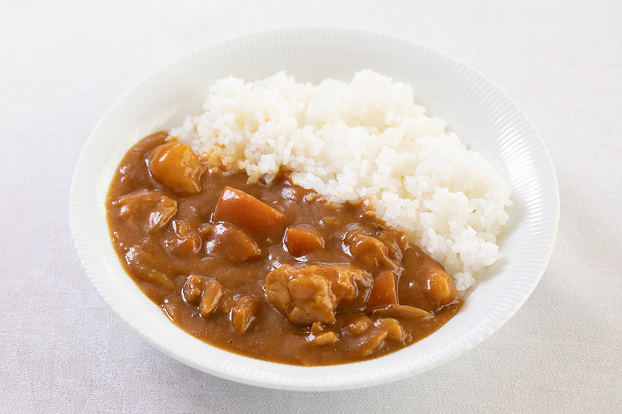

Japanese Curry

Japanese curry is one of the most popular dishes in Japan. In contrast to other forms of curry around the world, Japanese curry lacks spice and is instead sweet and savory.
Ingredients
- 500g beef or chicken, diced
- 3 carrots
- 3 large potatoes ("yukon gold", ideally)
- 1 onion
- 1L chicken stock
- 100g butter
- 100g flour
Preparations
- Cut the onions into wedges.
- Peel the carrots and cut them into small pieces. Ideally, use the "rangiri" or "rotating cut" method.
- Cut into pieces that are approximately cubes 1cm across.
Part 1: Curry
- Add oil to a large pot over medium heat. Add the onion and saute until they become translucent and tender. This will take about 5 minutes.
- Add the meat and stir until it's browned on the outside.
- Add the carrot and potatoes. Cover the contents of the pot with stock until all of the ingredients are just barely covered.
- Simmer on medium-low heat until the vegetables are soft. This should take about 30 minutes.
While the curry is simmering, start cooking the rice and prepare the roux.
Part 2: Roux
- Melt 100g butter in a small saucepan. Add 100g flour, mix well.
- Cook for 20 minutes over low heat, until the roux becomes a golden brown color. Stir frequently to prevent burning.
- Add curry powder and garam masala. Once it's mixed togther, turn off the heat. The roux is now ready to use.
- Add the roux to the curry. Stir for 5 minutes until the roux is completely dissolved.